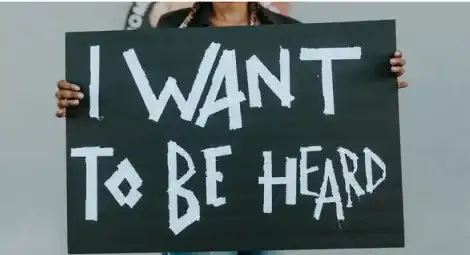

Women's Work
L’émancipation du travail des femmes


Bienvenue sur le site Women’s Work. Apprenez en plus sur l’émancipation du travail des femmes, la notion de parité et sur l’égalité salariale. A travers de différents articles présentant différentes figures du féminisme, découvrez l’histoire de l’idéologie féminisme et ses revendications
Féminisme, du début de l'idéologie à l'émancipation du travail des femmes
Au cœur d’une idéologie complexe, découvrez l’émergence du féminisme à travers l’histoire d’Olympe de Gouges et comprenez l’histoire du travail en tant que femme à travers le XXème siècle.

Idéologie

Du travail genré à l'inégalité salariale
À travers notre pays développé, découvrez le mythe de la parité et de l’égalité salariale. A travers des chiffres que vous ne pensez surement pas possible, déchiffrez l’idéologie de l’égalité homme – femme.
Égalité des genres

Femmes de pouvoir, un travail mondial
Percevez la signification européenne et mondiale du mouvement féministe pour l’égalité totale à travers les chiffres et l’œuvre de Sylvie Schweitzer : "Femmes de pouvoir : une histoire de l'égalité professionnelle en Europe (XIXe-XXe siècle)".

Femmes de pouvoir